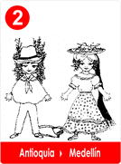
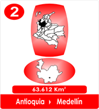

2 "SUEÑO DE LIBERTAD "ANTIOQUIA"
- Consulta a Jesús
- Fábulas de Colombia
- Metodo Corima
- Arbol
- Flor
- Fruto
- Estrellas Pequeñas
- Nostradamus
- La Ruta del Sol
- Fabula de Corima
- Productos y Servicios
- Mensajeros Celestiales
- Juguemos
- Articulos
- Estrellas Humanas
- Herramientas
- Plantas Milagrosas
- Adorables Fechas
- Videos


Escucha el Himno Aquí
Josué y Myriam se conocieron en circunstancias muy difíciles, sus padres por orden de los
soberanos Españoles, lo habían perdido todo.
Josué era un joven fornido e impulsivo, decidido a no dejarse derrotar, Myriam era una encantadora jovencita muy hacendosa.
Se conocieron, se enamoraron y pidieron permiso a sus padres para casarse y aunque les doliera, los dos estaban decididos a viajar a las tierras descubiertas de América.
Antes de emprender el viaje, todos estuvieron de acuerdo en esconder su verdadera identidad, sabían que debían amoldarse a as apariencias de los gobernantes de turno, encubriendo sus antecedentes judíos.
Josué adoptó el nombre de José de la Madrid, la jovencita adquirió el nombre de Marisol
Ángel de la Madrid y la pareja zarpó en el barco que los llevaría hacia el Nuevo Mundo, sabían que eran desplazados.
Al llegar a Puerto y verlo tan habitado, temieron que pudieran identificarlos, entonces siguiendo los consejos de sus amados padres decidieron buscar tierras no muy pobladas.

Los dos leían a diario los pasajes del Libro Sagrado La Biblia que contenía historias consejos y Sabiduría y el refranero fruto de la experiencia, que eran para ellos, el alimento, la fuerza y el consuelo.
"Siempre Adelante ", La libertad los hará libres, abran caminos de vida, el hacha se lleva en las manos, el trabajo nunca es deshonra, ocúpate evita el ocio, no hay nada imposible si no seres incapaces, con esfuerzo y constancia todo se logra, la unión hace la fuerza, crezcan y multiplíquense.
Al final siempre repetían!! La libertad nos espera!!
Juntos encontrarían la fuerza para escalar montañas y vencer obstáculos en busca del nuevo hogar.

"Subir, subir " les diría el abuelo!
Ya cuesta arriba, divisaron unos arrieros que paso a paso, buscaban pasto para el numeroso ganado que arriaban.
"Sigámoslos" , dijo José.
De ellos aprendieron en una piedra, a moler maíz y hacer lo que llamaban "arepas ", eso les recordaba el pan sin levadura.
José y Marisol, después de caminar mucho y subir montañas dejaron atrás al grupo de arrieros.
Hasta que por fin encontraron un lugar lleno de flores, muchas frutas y bella naturaleza con un pequeño valle, verde, muy verde y con un clima tropical tan delicioso, que decidieron quedarse.
El sol calentaría las cunas de los niños y ellos decididos, protegerían su libertad.
Marisol Ángel de de la Madrid, desempacó sus hilos, el rodillo, los bolillos, el frivolité, la aguja de crochet y empezó a tejer!
La casa que hiciera José, se llenó de risas infantiles, de encajes, flores y aromas tropicales, atrás quedaban los recuerdos, las enseñanzas y los seres amados que oraban por ellos.
Nombraron al vallecito el "Valle del Aburrá”
Así crecieron y se multiplicaron. La generosa tierra fructificó. Luego llegaron otros y se esforzaron como ellos con gran valentía, los llaman "paisas" y entre todos construyeron una región con sueños de Independencia y Libertad.